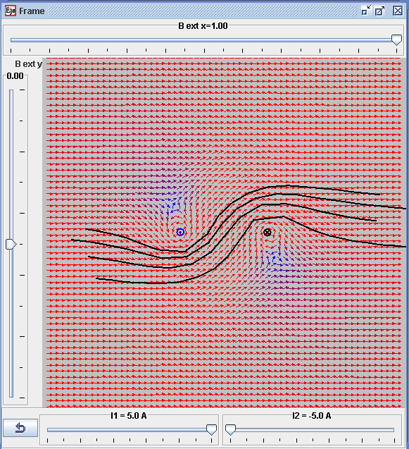

Magnetic field of the 2 wire currents in a external Bx
magnetic field
The EJS Magnetic Field from 2 wires model computes the B-field created by an electric current through 2 straight wires in the z direction with the options of external magnetic fields. The user can click on any part of the 2D space to plot the magnetic field lines.
The Magnetic Field from Loops simulation was created by Fu-Kwun Hwang, edited by Loo Kang WEE using the Easy Java Simulations (EJS) modeling tool . Additional exercises written by Loo Kang WEE. You can examine and modify the model for this simulation if you have Ejs installed by right-clicking within the simulation frame and selecting "Open Ejs Model" from the pop-up menu. Information about EJS is available at: <http://www.um.es/fem/Ejs/> and in the OSP ComPADRE collection <http://www.compadre.org/OSP/>.